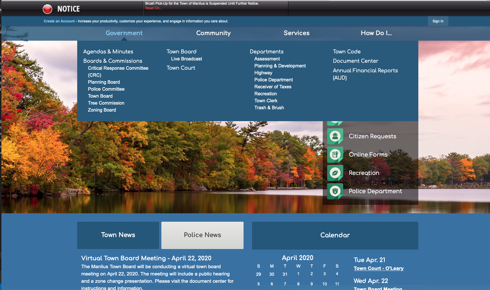
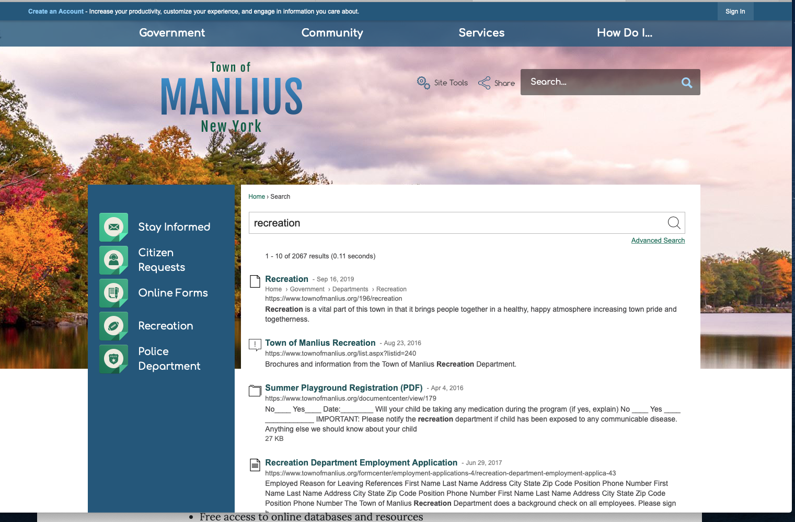

In this post, we'll talk about how a local town uses their digital platform to provide information and a service. We'll use criteria shared in Don't Make me Think Revisited, written by Steve Krug to discuss navigation features. He explains:
"The standard needs to be that these elements pop off the page so clearly that it doesn't matter whether you're looking closely or not. You want to be relying on the overall appearance of things, not the details (pg. 82)."
What' site are we talking about?
This week's usability analysis is of the Town of Manlius website. This purpose of the website is to inform readers about the Town of Manlius's services and departments, promote community events and provide various digital forms.
Introduction
The Town of Manlius serves all residents residing in the villages of Fayetteville, Manlius and Minoa. It has a complex responsibility to present a lot of information to a population with a wide range of digital literacy.
Methodology
We're going to answer four questions about the site to learn about how effective its navigation components. The questions are:
- What can I find and do here?
- Are navigation elements clear?
- You are here. Where am I?
- Does the site provide useful results to a keyword search?
What can I find and do here?
After trial and error, users will understand what information they can find and what they can do here. It won't be easy during the first few visits.
This impacts site visitors because it confuses visitors- making it more difficult to find information
 screen capture, www.townofmanlius.org
screen capture, www.townofmanlius.org
Recommendation
The site should keep the traditional top navigation bar and add a "Quick Links" to it to include the items from the list displayed on the photograph. There is another opportunity to use a slideshow of different photographs of services and programs- visitors most often visit. The visitor can click the photo and be directed to the specific page.
Are the navigation elements clear?
The Town of Manlius site doesn't meet the "clear, simple, and consistent" navigation standard. The homepage has three different navigation components that distract users' attention. The site includes the reliable top navigation bar that presents the bulk of the site's information in addition to a smaller list of navigation features overlayed on the photograph and again- half way down the page.
This impacts site visitors because it confuses visitors- making it more difficult to find information
 screen capture, www.townofmanlius.orgRecommendation
It would be helpful if the sub sections differed from the main components by scale or font color- I don't think the slight indentation is enough. But it rather makes it difficult to read.
You are here. Where am I?
The site is inconsistent.Some pages make it clearn to the user, where they are. But others do not. Most sub pages include, "breadcrumbs" that layout the main component and sub components but the text is very small.
 screen capture, www.townofmanlius.org
screen capture, www.townofmanlius.org
Recommendation
.
Does the site provide useful results to a keyword search?
 screen capture, www.manliuslibrary.org
Recommendation
O